Australian businesses in the building and construction industry are required to report to the ATO on the total amount they've paid contractors each year for building and construction services. This is done on the Taxable payments annual report.
The first step is to identify and tag the relevant suppliers in MoneyWorks. This is achieved by using one of the category or custom fields for the tag, and selecting a suitable tag value (such as "TPR").
For example if you elect to use Custom2 and the tag of "TPR", then each supplier that needs to be included in the report should have "TPR" entered into the Custom2 field. We suggest that you label the selected field in the Document Preferences>Fields.
Tip: If you have a lot of suppliers, highlight them in the list and use the Select>Replace command to bulk update.
ACT Australian Capital Territory NSW New South Wales
NT Northern Territory QLD Queensland
SA South Australia
TAS Tasmania
VIC Victoria
WA Western Australia OTH Overseas addresses
To run the report:
The report settings window will open.
For example, if you tagged the suppliers with "TPR", you would enter "TPR" here.
For example, if you tagged the suppliers in the Custom2 field, you would select Custom2 here.
If you want to create a file to upload to the ATO portal:
Set the Export to ATO option
Enter the Reference and Prepared by values
Click Preview (or Print_)
If you are creating a text file for the ATO, you will be prompted for a name and location for the file in the standard File Creation dialog.
MoneyWorks will handle the Australian Wine Equalisation Tax (WET) tax, provided the Locale is set to Australia and a tax code of WET is correctly created.
It is a good idea to keep the WET collected separated from your normal GST. For this reason the first step in setting up to handle WET is to create three new tax accounts as follows:
A new WET Tax Holding Account
This is a current liability account with a "*" tax code.
A new WET Received Account
This is of type GST Received
A new WET Paid account
This is of type GST Paid
You will need two new taxes, one for WET (which you probably won't directly use), and a composite tax for "WET with GST lumped on top", which is the one you will use.
In Show>Tax Rates:
The TAX Paid and Received accounts should be the new WET Paid and Received accounts as created above.
The current percentage is 29%.
This is because GST is applied on top of WET.
This is a "composite tax". The first tax must be WET, with the second being your normal GST code (normally G, but you might have used something else). Make sure the Mult (multiplicative) check box is set (otherwise the taxes will be added, which is wrong).
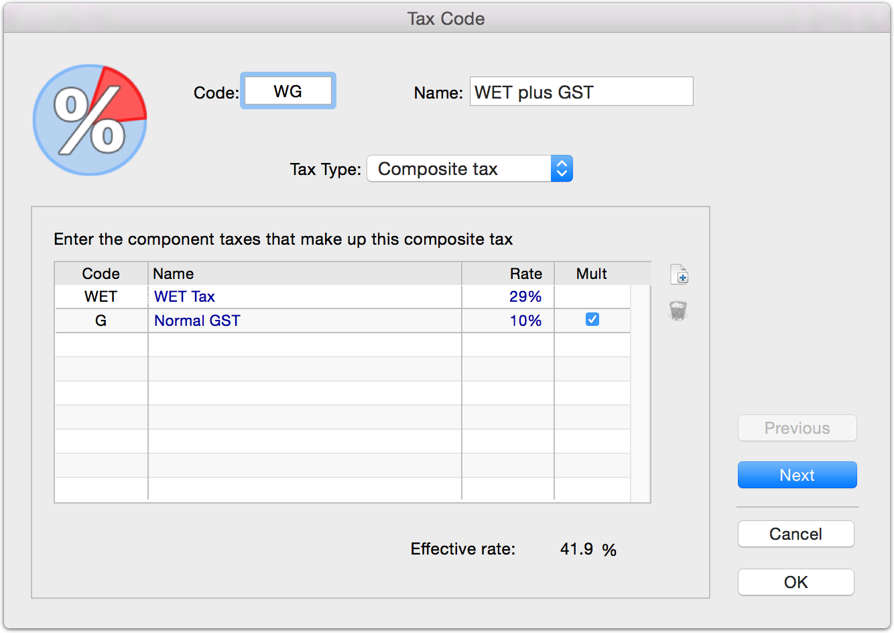
You should create new General Ledger accounts to account for transactions that use the WET tax.
You will need one for Sales, one for Cost of Sales, and, if you are running inventory on items subject to WET, one for Stock.
The tax code on these accounts must be set to WG (not WET, as you will be paying WET with GST on top).
Assign the income, expense and stock accounts to the appropriate ledger accounts that are set to GW.
You will need to format your invoice to show the WET at the bottom. The Traditional Invoice form does this, or you can modify your existing invoice layout.
When the WET tax is correctly set up, a second column will appear in the GST Report which lists the WET tax on each transaction. This is summarised at the bottom, the same as for other tax rates.
When the report is finalised, an additional field is available for the WET holding account (which is where your WET tax will be journalled into). Enter the code of the previously created WET Holding Account into this.
The BAS Guide will configure to show the WET in the appropriate boxes.
Starting in 2019, IRAS in Singapore is changing the way GST is handled on certain Prescribed Goods (mobile phones, memory cards and similar). For details of this please refer to the IRAS web site, or ask your accountant. MoneyWorks 8.1.4 and later are compliant for this Customer Accounting for Prescribed Goods.
You will need to do some additional setup to handle customer accounting.
If your MoneyWorks file was created prior to 8.1.4 and you are required to use Customer Accounting, you will need to create some new GST codes (these will be created automatically in new files made using version 8.1.4 or later). See Tax Codes for information on creating these.
The new codes are:
| Code |
|
|
|
|---|---|---|---|
| GPG |
|
|
|
| CAG |
|
|
|
| CAA |
|
|
|
Note: Code CAA must have the All Tax option set.
Note: Do not use the IRAS codes shown in the above table (they are for information only). Provided that you use the above coding structure shown, MoneyWorks will substitute the IRAS codes when preparing the IRAS F5 and IAF reports.
You will also need to create a new general ledger expense code to handle the special accounting required (this code is not included in the default account setup as it will only be applicable to a small number of users). The account should be called something like "GST Adjustment (Customer Accounting - Prescribed Goods)", and have a tax code of "CAA" as shown below.
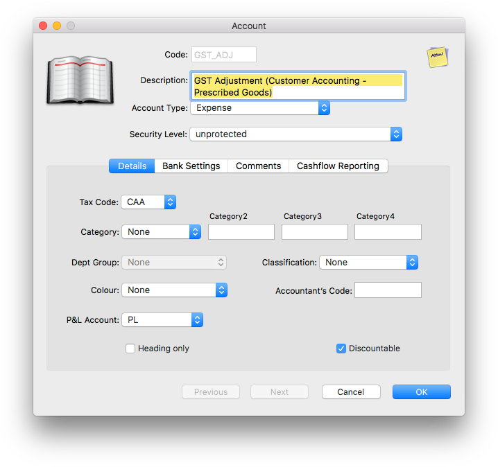
For information on creating account (general ledger) codes see Creating a New Account.
If you are purchasing prescribed goods as items (as opposed to "By Account"), you will need a new Item to handle the customer accounting calculation. This will be an item that your purchase (you won't sell it), and it will have the Expense account when buying account set to the GL account created above (i.e. one with a tax code of "CAA"), as shown below:
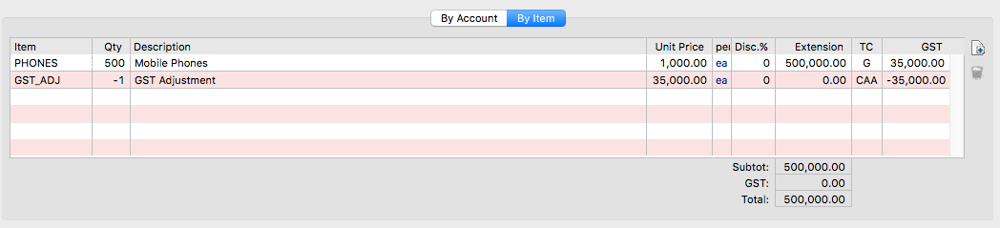
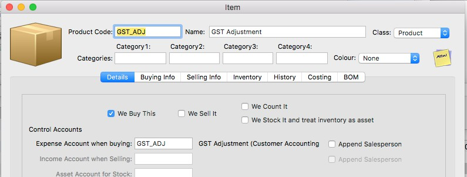
For information on creating a new item see Creating a New Item.
When you purchase prescribed goods you do not pay GST to the supplier, but rather you will be responsible for paying it to IRAS. For MoneyWorks to automatically do the GST accounting required, it is important that:
GST will be added to this line at the standard rate.
To achieve this use either the general ledger code or the item code created above (for By Account or By Item transactions respectively).
Thus a "By Account" purchase invoice will be coded in MoneyWorks as:
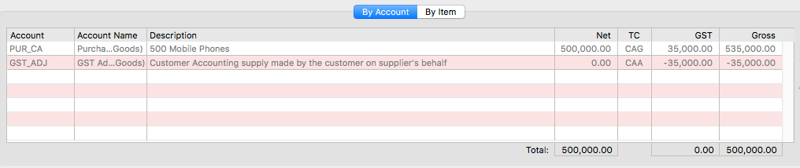
A "By Item" purchase invoice will be coded as:
Note that in the "By Item" example, you must enter the negative GST amount in the GST column for the GST Adjustment.
Tip: Put a sticky note on the items that you purchase as prescribed goods to remind you about the special coding required and the threshold.
When you sell prescribed items, GST is not charged. You must use the GPG tax code to indicate that this is the sale of prescribed goods. This does not apply if you are selling to the end user (normal GST applies).
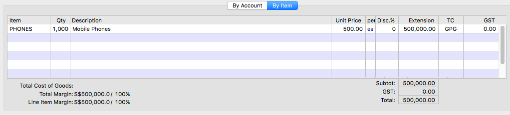
Note: When prescribed goods are sold, the invoice must display the special text "Sale made under customer accounting. Customer to account for GST if
$xxx". The "Prescribed Goods (Singapore)" template does this, and others can be customised.
This is a scheme introduced on January 1st 2021. Also known as "Accounting for import VAT on your VAT Return", it means you’ll declare and recover import VAT on the same VAT Return, rather than having to pay it upfront and recover it later,
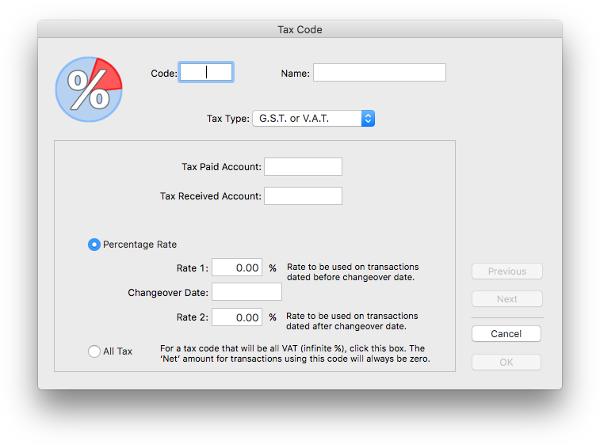
thus easing your cashflow.When you belong to the scheme you will be able to retrieve a Monthly postponed import VAT statement from HMRC as outlined in Get Your Postponed Import VAT Statement on the HMRC website. This needs to be entered into MoneyWorks.
Before you can do this, some additional setup is required:
To record the postponed VAT, you will need a new VAT code. This is set up as follows:
The Tax Rates list window will be displayed.
The tax rate entry window will be displayed.
Note: The tax code must start with "V", or whatever letter is the first character of your normal VAT code(s) if you have changed it.
Give it a description of "Postponed VAT", ensure the Tax Type is "G.S.T. or V.A.T.", and tab through the two account fields which will auto-populate with your default VAT accounts
Leave the tax rates as zero, but set the All Tax radio button
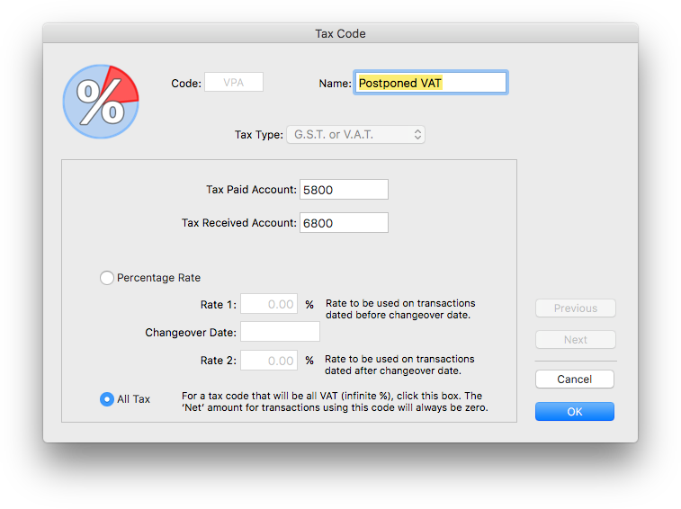
Click OK to save the new tax rate
You will need a general ledger account to handle the postponed VAT. If you are processing your postponed VAT correctly this should always have a value of zero. To make the account:
The Accounts list window will be displayed.
The account entry window will be displayed.
For convenience it would pay to have the code near the VAT Paid control (so give it the next code in sequence to that). In practice it doesn't matter what the code is (so "PVAT" or similar is fine).
Set the Account Type to "Current Liability"
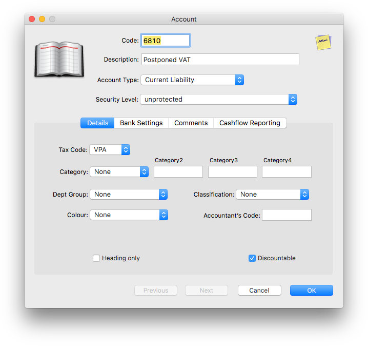
Click OK to save the new account.
For convenience down the track, we are going to need a clearing or offset account. So create another new account similar to the above, but with a description "Postponed VAT Clearing" and, critically, a tax code of "*".
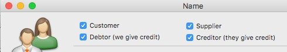
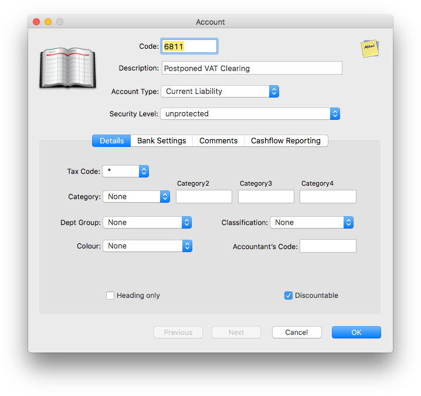
Special debtor/creditor codeThe Postponed VAT will be recorded in an invoice (in fact two invoices—we shouldn't do things by half) to HMRC, so we need an appropriate debtor and creditor.
Note: You can also record the Postponed VAT as a payment/receipt. You will need to do this if you are using MoneyWorks Cashbook, as this doesn't have invoices. However an invoice seems tidier.
If you already have HMRC set up as a customer/supplier, check in your Names list (Show>Names) that they are set up as both a Creditor and a Debtor:
HMRC needs to be both a debtor and a creditor
If they are not set up as both a Debtor and Debtor, you will need to change them (single user mode is required for Datacentre users).
If HMRC is not already set up, you will need to create them:
The Names list window will be displayed.
The Name entry window will be displayed.
Turn on both the Debtor (we give credit) and the Creditor (they give credit) check boxes, and click OK
To record your Postponed VAT two transactions are required, a purchase invoice (or payment) to record the nominal VAT asset, and a sales invoice (or receipt) to record the nominal VAT liability. These will exactly cancel each other out.
Note: MoneyWorks determines the nature of the VAT by the transaction type.
Don't try and be clever by reducing this to a single transaction. To record the VAT liability we make a new purchase invoice to HMRC:
Choose Show>Transactions, click on the Purchase Invoices sidebar tab then click the New button
A new purchase invoice entry screen will be displayed.
Alternatively make a new Payment if you aren't using invoices.
Leave the Amount as zero, and if necessary set the transaction type to By Account
Enter the amount of Postponed VAT from your postponed VAT statement into the Net field
When you tab out of the Net, the amount should transfer automatically into the VAT field, with the Net becoming zero. If it does not then either you have used the wrong GL code, the GL Code doesn't have the tax code "VPA", or the "VPA" code has not been set to 100%. You should cancel out of the transaction and fix the error and try again.
Tab through fields until you are in the Account field of the next line
Enter the code for the Postponed VAT Clearing account, as created above.
Depending on your Document Preference Settings, this line might self balance forcing the transaction to have a zero balance. If it doesn't, enter the negative of the Postponed VAT amount into the Net field
Check that the tax code on this line is "*" and the VAT amount is zero
The transaction should look something like the following:
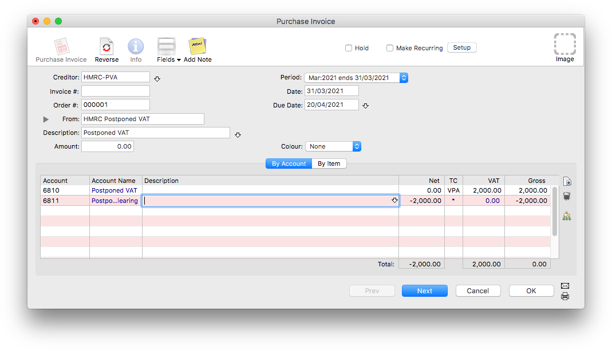
Tip: As you are required to keep copies of the Postponed VAT Statements from HMRC, you should store the statement (which is supplied as a PDF) as an attached image on this transaction.
Now repeat the process, but this time make a Sales Invoice (or receipt). The date and coding on this transaction must be identical to that on the original Purchase Invoice (or payment).
Note: If you are using a Payment/Receipt you can opt to omit the second clearing line on each transaction as the payment and receipt will cancel out if done properly (but will still appear on your bank reconciliation, so should be marked off together). Any local currency bank account can be used, provided it is not an "Unbanked" account.
Having recorded the Postponed VAT as above there is nothing else you need do. The transactions will automatically adjust boxes 1 and 4 of the VAT return (and be included in the VAT summary for MTD).
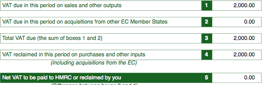
The value of the imported goods will be recorded when you enter the invoice/ payment into MoneyWorks (and hence reflect in Box 7). These invoices/ payments will not be recorded with VAT.